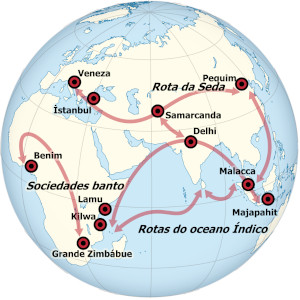

Curiosidades que vão mudar a sua vida... ou não!
Rota da seda
 No século XIX, um arqueólogo alemão chamado Ferdinand Von Richthofen estabeleceu o nome de uma das mais famosas rotas comerciais e religiosas de todos os tempos, a chamada Rota da Seda. Antes que tal nome fosse escolhido, esse trajeto, com mais de sete mil quilômetros, já era há mais de dez mil anos utilizado por aventureiros, peregrinos comerciantes, clérigos, monarcas e soldados que cortavam esse extenso conjunto de estrada a pé ou no lombo de animais, partindo da porção síria do mar Mediterrâneo, até os territórios chineses de Xiang.
A mais antiga importância desse caminho se encontra no processo de espalhamento, ainda na Pré-História, das comunidades humanas do continente africano para diversas regiões da Ásia e da Oceania em busca de melhores condições de vida. Séculos mais tarde, seria essa mesma via de acesso que determinaria a penetração dos povos indo-europeus no Oriente Médio. Tal ocupação daria origem aos povos semitas que, por sua vez, estabeleceriam a gênese dos árabes e judeus
Por volta do século VI a.C., a unificação territorial empreendida pelo Império Persa foi o primeiro passo para que atividades comerciais diversas fossem organizadas pelos povos englobados por essas civilizações. Os comerciantes que saíam do Oeste levavam marfim africano, ouro, peles de animais, vinho e animais de montaria. Em contrapartida, os distantes territórios chineses ofereciam ervas aromáticas, perfumes e os tão falados tecidos de seda que nomeavam o caminho.
Na verdade, as caravanas não percorriam toda a extensão da Rota da Seda. Com o passar do tempo, percebemos que certas cidades ficaram responsáveis por agregar comerciantes que se concentravam em apenas um trecho do percurso. Deste modo, vemos que o comércio se transformou em uma atividade que organizou o cenário social, econômico e político de diferentes pontos desse grande território. Entre os séculos III e IV, a invasão dos hunos marcou o período menos seguro para que as comitivas de comerciantes se movimentassem.
No século VIII, a parte oeste da rota começou a ser dominada pelos árabes que realizaram a conquistas das terras da Pérsia. Séculos mais tarde, exatamente no século XII, os cavaleiros e soldados de Gengis Khan tomaram a Ásia Central, o Norte da China e os territórios tibetanos. Ao contrário do que possa parecer, o domínio militar mongol foi de grande ajuda para que a economia comercial da Rota da Seda se mantivesse viva ao longo das décadas. Com o simples pagamento de taxas, os mercadores tinham direito de tráfego e comércio.
Ainda no período medieval, percebemos que o Renascimento Comercial fomentou a cisão daquela visão de mundo limitada dos tempos feudais. Nessa época, as famosas viagens de Marco Polo davam conta de paisagens, costumes e cidades que ampliavam as perspectivas da época. Ao longo do tempo, o fechamento dessa via de comércio incentivou bastante a realização das Grandes Navegações. De tal modo, o homem europeu começou a constituir novas rotas de comércio pelos mares e continentes.